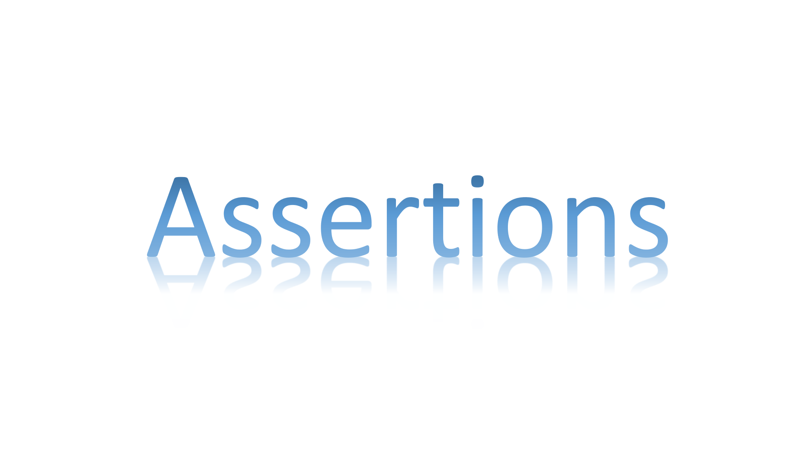
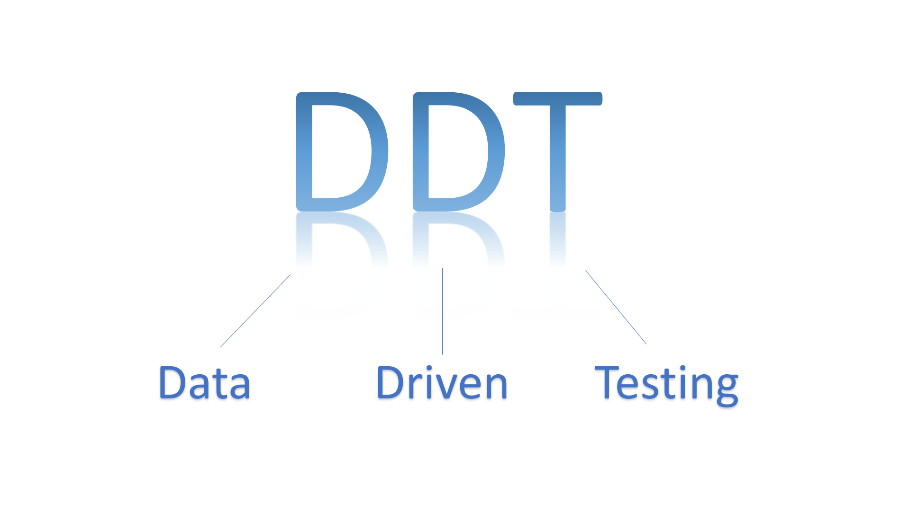
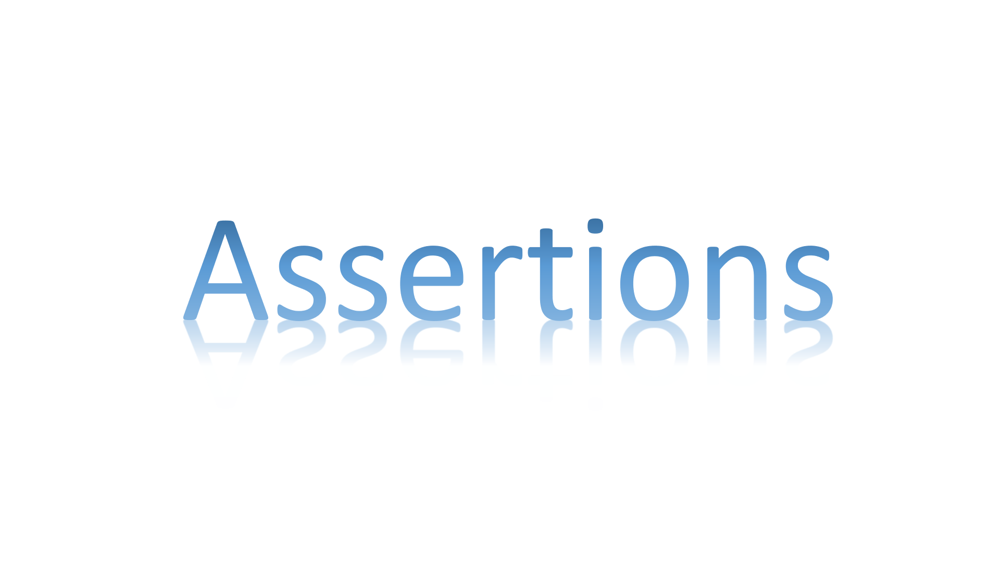
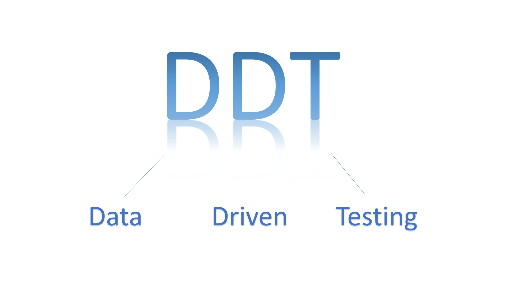

My Automation Project
What is automation testing?
Automatic tests are tests that are done automatically by the computer, and obviate the need for human tests (manual tests). To perform automated tests, it is necessary to program scripts that aim to test the software automatically.
My project:
My project was to run tests on the site https://toggl.com/plan/pricing and make sure the site ran without glitches and bugs.
 


